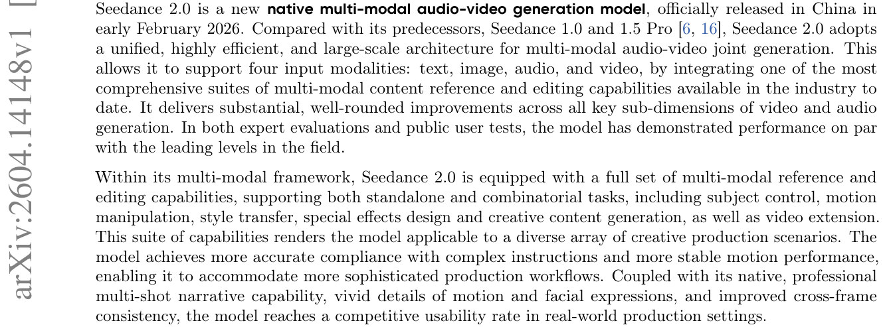
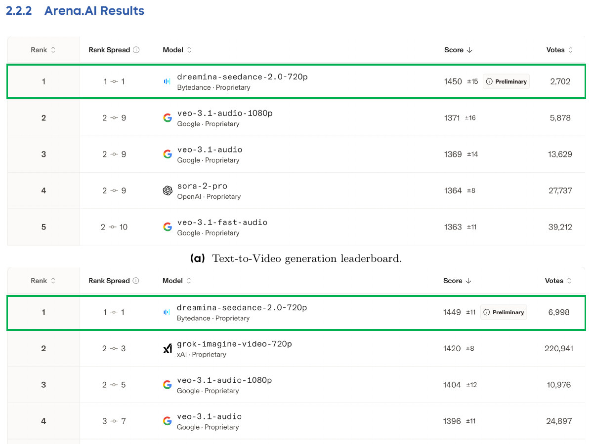
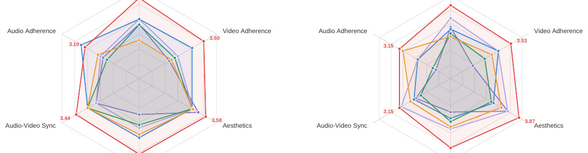

速览
doubao-seedance-2-0-260128§1五条要点
一个模型，四种输入，参考 + 编辑 + 续写
文本 / 图像 / 音频 / 视频输入，支持主体、运动、风格、特效参考，视频编辑、续写与延展，以及它们的组合§1。R2V 任务支持 20/22，对手最多 13/22表 25。
T2V：六个维度全部第一
运动 3.75、视频指令遵循 3.43、美学 3.67、音频质量 3.63、音画同步 3.75、音频指令遵循 3.56表 1；各维度可用率（≥3 分）均 >83%，满意率（≥4 分）均 >51%表 2。
音频是拉开差距的地方
T2V 音频质量满意率 62.05%，对手全部 <10%表 2；I2V 音频三项 3.61 / 3.54 / 3.70，第二名 Seedance 1.5 Pro 落后 0.54–0.60表 9。
不是全线第一
视频延展任务遵循 1.93，Veo 3.1 为 2.78表 28；视频编辑任务遵循 2.20 低于 Kling O1 2.29表 28；运动参考的首帧保持 2.71，Kling 3 Omni 4.31表 27。
这是一份评测报告，不是方法报告
架构、参数、训练数据、caption、训练阶段、RL 均未披露；所有分数来自内部 SeedVideoBench 2.0，样本量、评审人数未给出§2.2。
架构：原文只给了输入输出
论文没有架构图，也没有模块、参数或连接方式。下面这段首页引言就是原文对架构的全部描述。

相对前代：原文给出的变化
Seedance 1.0
视频生成基础模型[6]。
Seedance 1.5 Pro
音视频同步生成§1 · [16]。
Seedance 2.0
统一的多模态音视频联合生成框架；四种输入；新增视频编辑与续写；升级音频模块并加入双声道（binaural）§1。
- 原文称 Seedance 系列「一直围绕统一架构构建」§1，但没说 2.0 的骨干是否沿用 1.5 Pro，也没有消融。
- 音频：「upgraded audio generation module integrated with binaural audio technology」，支持背景音、环境音效、角色旁白多轨同时输出§1。模块结构未披露。
- 文本侧可直接参考「text-based storyboards」，模型能自主规划分镜§1。实现方式未披露。
数据：训练侧零披露，评测侧给了任务体系
全文没有数据章节。下面先列清「披露了什么」，再把唯一成体系的数据构建（SeedVideoBench 2.0 的评测集）拆开。
| 维度 | 原文怎么说 | 状态 |
|---|---|---|
| 训练数据 | ||
| 来源 | 未提及 | 原文未披露 |
| 规模（视频 / 图像 / 音频条数、时长） | 未提及 | 原文未披露 |
| 清洗与过滤 | 未提及 | 原文未披露 |
| 合成数据 | 未提及 | 原文未披露 |
| caption / 标注方式 | 未提及；只说模型可参考文字分镜§1 | 原文未披露 |
| 编辑 / 参考 / 续写三元组怎么造 | 未提及 | 原文未披露 |
| 配比 | 未提及 | 原文未披露 |
| 评测数据（SeedVideoBench 2.0） | ||
| 专项数据集 | 覆盖 subject、motion、scene、style、audio；「样本分布经过调整，在小评测预算下尽量减小方差」§2.2.1 | 部分披露 |
| T2V 细分类 | 视频 30 类（表 3–5 行数），音频 17 类（表 6–8 行数）；另按 6 个场景出雷达图表 3–8 · 图 3 | 已披露 |
| I2V 细分类 | 视觉 24 个子类（表 11–18），音频 22 个子类（表 19–23）推算 | 已披露 |
| R2V 任务 | 22 种输入组合，表中列出 20 种表 25 | 已披露 |
| 每类样本量、评审人数、评审一致性 | 未提及 | 原文未披露 |
I2V 子类数为本页按表头逐个计数：表 11 (2) + 12 (3) + 13 (3) + 14 (4) + 15 (3) + 16 (4) + 17 (3) + 18 (2) = 24；表 19 (4) + 20 (6) + 21 (4) + 22 (5) + 23 (3) = 22。
评测集怎么搭：多模态任务四组 + 两类一致性
参考任务Reference
- 主体参考
- 运动参考
- 视觉特效参考
- 风格参考
编辑任务Editing
- 主体编辑
- 风格编辑
- 场景编辑
- 音频内容编辑
延展任务Extension
- 剧情续写
- 无缝延展，时间轴向前、向后都测
组合任务Combination
- 按真实工作流配对，如「用参考图替换视频主体」= 参考 + 编辑
参考对齐Reference Alignment
生成内容与参考输入有多像（外观、声音、运动、风格）§2.2.1。
编辑一致性Editing Consistency
编辑时非编辑区域保住了多少§2.2.1。和「任务遵循」分开打分。
T2V 的 30 个细分类（表 3–5 共用）
展开 30 类 + 音频 17 类表 3–8 行名
视频 30 类：Holidays / Festivals · Consumer Visual Effects · Counter-Reality Instructions · Cinematic Visual Effects · Same-Type Interaction · Cross-Type Interaction · Group Coordinated Motion · Advanced Camera Movement · Special Camera Shots · Editing Rhythm · Combined Shot Instructions · Physical Feedback · Physical Phenomena · Natural Phenomena · Text Overlay · Short Text · Creative Text · Long Script · Abstract Challenges · Multi-Entity Feature Match · Knowledge Assessment · Compound Multi-Instructions · Surreal Motion · Intense Sports Motion · Fine Hand Motion · Anthropomorphic Motion · Emotion & Expression · Visual Style · Lighting & Color Tone · Framing / Composition表 3
音频 17 类：Chinese Dialect / Accent · Chinese Multi-Person Dialogue · Chinese Variety Show Voice · Chinese Opera · English · Minority Languages · Singing / Rap · Spatial Scene · Off-Screen Voice · Non-Verbal Voice · Voice + Action Interaction · Object Interaction Sound · Animal Sound · Ambient / Background Sound · Special Effects (ASMR, etc.) · Instruments & Audio · Dual-Channel Audio表 6
6 个场景：Ad、Fiction、PGC、Consumer Effects、Social、Basic图 3
唯一一条「数据回流」细节未披露
真实度研究：评审尝试把 Seedance 2.0 生成结果和真实视频区分开，结果回馈到美学调优流程§2.2.1。识别率、样本数、怎么回馈都没给。
训练配方：原文未披露
没有预训练阶段、分辨率/时长课程、后训练、RL、蒸馏的任何描述，也没有超参。以下只列原文能对上的线索。
预训练
原文未披露：阶段数、数据、分辨率与时长课程、算力均无。
后训练 / RL
原文未披露。引言把 RewardDance[21]、DanceGRPO[22] 列为团队「other key components」，但没说 2.0 是否、如何使用。
美学调优 + Fast 版
真实度研究结果回馈美学调优§2.2.1；另提供加速变体 Seedance 2.0 Fast，用于低延迟场景§1。两者做法均未披露。
评测
两套来源：公开的 Arena 人类偏好榜（图 2），其余全部来自内部 SeedVideoBench 2.0（表 1–28）。T2V/I2V 对比商用闭源模型，R2V 对比带参考/编辑能力的模型。
6.1 协议：SeedVideoBench 2.0 改了什么
两条主线变化§2.2.1
- 新增多模态任务评测：正式定义「多模态任务遵循」和「生成一致性」，同时在多模态设定下继续测 prompt 遵循与运动质量。
- 分客观 / 主观两轨：运动稳定性等走自动管线，美学等走专家盲评。表中哪些维度属于哪一轨未标注。
叙事质量（新增）§2.2.1
- 镜头语言：冗余机位、越轴（180° 规则）、景别不匹配、节奏不均
- 情节设计：给模糊或简短 prompt，能否写出连贯且有意思的剧情
- 风格美学：光线、构图、调色，及人物 / 服装 / 道具 / 布景是否协调
量表与三档比例表 1 · 表 2 · 表 24
- T2V / I2V 各维度 1–5 分；R2V 的多模态任务遵循和 prompt 遵循 1–3 分，其余 1–5 分。
- 可用率 = ≥3 分占比；满意率 = ≥4 分；惊喜率 = 5 分。
评审来源§2.1 · §2.2
- 与媒体行业专家共建基准；引入广告与游戏制作背景的专家做主观评分，侧重叙事与美学。
- 人数、每条样本评几人、一致性：原文未披露
6.2 Arena 公开榜

| 榜单 | Seedance 2.0 分数 | 票数 | 第 2 名 | 第 2 名分数 / 票数 | 领先 |
|---|---|---|---|---|---|
| T2V | 1450 ±15 | 2,702 | veo-3.1-audio-1080p | 1371 ±16 / 5,878 | 79 |
| I2V | 1449 ±11 | 6,998 | grok-imagine-video-720p | 1420 ±8 / 220,941 | 29 |
分数、票数读自图 2；领先分差见 §2.2.2。原文强调以 720p 胜过 1080p 对手§2.2.2。
6.3 T2V（对比 Kling 2.6 / Kling 3.0 / Sora2 Pro / Veo3.1 / Seedance 1.5）
| 模型 | 运动 | 视频指令遵循 | 美学 | 音频质量 | 音画同步 | 音频指令遵循 |
|---|---|---|---|---|---|---|
| Kling 2.6 | 2.72 | 2.39 | 3.21 | 2.46 | 2.67 | 2.00 |
| Kling 3.0 | 3.10 | 2.78 | 3.36 | 2.74 | 2.78 | 2.54 |
| Sora2 Pro | 2.69 | 2.81 | 2.82 | 2.76 | 2.65 | 2.92 |
| Veo3.1 | 2.73 | 2.59 | 2.88 | 2.62 | 2.54 | 2.24 |
| Seedance 1.5 | 2.39 | 2.59 | 3.19 | 2.88 | 2.91 | 2.69 |
| Seedance 2.0 | 3.75 | 3.43 | 3.67 | 3.63 | 3.75 | 3.56 |
表 1，1–5 分。原文：相对 Seedance 1.5 平均 +0.86，运动 +1.36；运动与音画同步领先第二名至少 0.65§2.3.1。
表 2 · T2V 可用率 / 满意率 / 惊喜率全表18 行
| 模型 | 运动 | 视频指令 | 美学 | 音频质量 | 音画同步 | 音频指令 |
|---|---|---|---|---|---|---|
| 可用率（≥3 分） | ||||||
| Kling 2.6 | 70.55% | 41.72% | 90.80% | 45.98% | 58.04% | 29.02% |
| Kling 3.0 | 82.82% | 58.90% | 91.10% | 66.52% | 66.96% | 54.02% |
| Sora2 Pro | 65.08% | 62.54% | 63.17% | 66.82% | 59.35% | 63.08% |
| Veo3.1 | 67.13% | 53.63% | 74.39% | 60.51% | 54.36% | 37.44% |
| Seedance 1.5 | 46.93% | 54.29% | 96.93% | 82.59% | 69.64% | 56.70% |
| Seedance 2.0 | 97.55% | 84.97% | 96.32% | 93.75% | 93.30% | 83.93% |
| 满意率（≥4 分） | ||||||
| Kling 2.6 | 3.99% | 9.20% | 29.75% | 2.75% | 18.75% | 8.04% |
| Kling 3.0 | 28.22% | 21.47% | 43.56% | 9.59% | 15.18% | 17.86% |
| Sora2 Pro | 6.98% | 22.54% | 20.00% | 9.81% | 19.16% | 31.78% |
| Veo3.1 | 6.57% | 12.11% | 13.84% | 4.10% | 13.33% | 14.87% |
| Seedance 1.5 | 1.23% | 12.27% | 21.78% | 5.36% | 25.45% | 25.45% |
| Seedance 2.0 | 67.18% | 51.23% | 61.66% | 62.05% | 68.30% | 57.94% |
| 惊喜率（=5 分） | ||||||
| Kling 2.6 | 0.00% | 0.31% | 1.53% | 0.00% | 1.34% | 0.45% |
| Kling 3.0 | 0.61% | 2.76% | 1.53% | 0.00% | 1.34% | 2.23% |
| Sora2 Pro | 0.00% | 2.86% | 0.63% | 0.00% | 0.47% | 11.68% |
| Veo3.1 | 0.00% | 0.69% | 0.35% | 0.00% | 0.00% | 0.51% |
| Seedance 1.5 | 0.00% | 0.31% | 0.00% | 0.00% | 1.79% | 1.79% |
| Seedance 2.0 | 10.43% | 8.28% | 9.20% | 6.70% | 13.84% | 26.92% |
美学可用率 Seedance 1.5（96.93%）略高于 2.0（96.32%），是表 2 唯一 2.0 不领先的格子。
按场景（图 3，仅标注了 Seedance 2.0 的数值）

| 场景 | 运动 | 视频遵循 | 美学 | 音频质量 | 音画同步 | 音频遵循 |
|---|---|---|---|---|---|---|
| Ad | 3.71 | 3.50 | 3.58 | 3.56 | 3.44 | 3.10 |
| Fiction | 3.67 | 3.53 | 3.87 | 3.54 | 3.15 | 3.15 |
| PGC | 3.97 | 3.34 | 4.13 | 3.75 | 3.84 | 3.53 |
| Consumer Effects | 3.46 | 3.46 | 2.89 | 3.08 | 3.58 | 3.42 |
| Social | 3.55 | 3.32 | 3.32 | 3.67 | 3.70 | 3.77 |
| Basic | 3.78 | 3.47 | 3.73 | 3.63 | 3.83 | 3.63 |
数值读自图 3 的标注（只标了 Seedance 2.0），对手的场景分原文未给。圆点 = 该列最高；框 = 本页标出的低点。Consumer Effects 美学 2.89 与表 5「Consumer Visual Effects」美学 2.79 不领先相互印证。
T2V 细分表要点（表 3–8）
运动 · 表 3
30 类中 29 类第一，第 30 类（群体协同运动 3.29）与 Kling 3.0 并列；区间 3.29–4.43§2.3.2。1.5 的短板物理反馈 1.69 → 3.46、自然现象 2.00 → 3.78、剧烈运动 2.00 → 3.79表 3。
视频指令遵循 · 表 4
27/30 第一，区间 2.71–4.29。文字类涨幅最大：创意文字 1.86 → 3.43、短文本 2.00 → 3.57、文字叠加 2.15 → 3.31§2.3.3。Sora 2 Pro 在抽象挑战（4.17 vs 3.86）、构图（3.50 vs 3.13）领先。
美学 · 表 5
28/30 第一或并列，区间 2.79–4.14；不领先的是消费级特效（1.5：3.00 vs 2.79）与超现实运动（Kling 3.0：3.86 vs 3.57）§2.3.4。
音频三表 · 表 6–8
音频质量 17/17 第一（2.82–4.17）；音画同步、音频指令遵循各 16/17 第一 + 1 项并列。中文方言是所有模型的短板：音频遵循 6 个模型中 5 个低于 2.0，Seedance 2.0 也只有 2.91§2.3.7 · 表 8。
6.4 I2V（对比 Wan 2.6 / Kling 2.6 / Veo3.1 / Seedance 1.5 Pro / Kling 3.0）
| 模型 | 运动 | 视频指令遵循 | 图像保持 | 音频质量与表现力 | 音画同步 | 音频指令遵循 |
|---|---|---|---|---|---|---|
| Wan 2.6 | 2.32 | 2.74 | 2.61 | 2.20 | 2.18 | 2.55 |
| Kling 2.6 | 2.52 | 2.55 | 2.98 | 2.21 | 2.27 | 2.21 |
| Veo3.1 | 2.65 | 2.87 | 2.69 | 2.68 | 2.69 | 2.79 |
| Seedance 1.5 Pro | 2.53 | 2.77 | 2.92 | 3.07 | 2.95 | 3.10 |
| Kling 3.0 | 2.80 | 2.78 | 3.18 | 2.89 | 2.83 | 2.85 |
| Seedance 2.0 | 3.35 | 3.46 | 3.31 | 3.61 | 3.54 | 3.70 |
表 9，1–5 分。图像保持差距最小（Kling 3.0 落后 0.13），运动差距 0.55§2.4.1。可用率：Seedance 2.0 六项均 >87%；满意率：运动 43.88% vs Kling 3.0 12.00%，图像保持 38.85% vs 27.27%，音频指令遵循 63.52% vs 1.5 Pro 37.77%表 10。
表 10 · I2V 可用率 / 满意率全表12 行
| 模型 | 运动 | 视频指令 | 图像保持 | 音频质量 | 音画同步 | 音频指令 |
|---|---|---|---|---|---|---|
| 可用率（≥3 分） | ||||||
| Wan 2.6 | 32.71% | 59.02% | 59.77% | 27.03% | 25.68% | 51.80% |
| Kling 2.6 | 48.72% | 48.72% | 80.59% | 27.19% | 31.14% | 30.26% |
| Veo3.1 | 59.69% | 65.50% | 67.05% | 60.75% | 59.35% | 56.54% |
| Seedance 1.5 Pro | 51.44% | 58.99% | 80.58% | 93.99% | 80.26% | 70.39% |
| Kling 3.0 | 68.00% | 60.00% | 90.55% | 77.39% | 68.70% | 66.52% |
| Seedance 2.0 | 87.05% | 88.85% | 91.37% | 97.42% | 91.85% | 92.27% |
| 满意率（≥4 分） | ||||||
| Wan 2.6 | 2.63% | 16.54% | 7.52% | 0.45% | 1.80% | 9.91% |
| Kling 2.6 | 5.86% | 9.52% | 19.05% | 1.32% | 2.19% | 5.70% |
| Veo3.1 | 7.36% | 20.54% | 6.20% | 7.48% | 10.28% | 24.30% |
| Seedance 1.5 Pro | 3.60% | 18.71% | 12.59% | 13.30% | 15.45% | 37.77% |
| Kling 3.0 | 12.00% | 18.91% | 27.27% | 12.61% | 15.22% | 20.87% |
| Seedance 2.0 | 43.88% | 47.48% | 38.85% | 57.08% | 54.94% | 63.52% |
I2V 表 10 没有惊喜率（=5 分）一档。
I2V 细分表要点（表 11–23；MQ 运动质量、IP 图像保持、VPF 视频指令遵循、AQ 音频质量、AVS 音画同步、APF 音频指令遵循）
复合指令最突出 · 表 12
复合多指令 MQ 4.00 / VPF 3.75；Seedance 1.5 Pro 为 2.13 / 2.25，Kling 3.0 MQ 2.88§2.4.2。「程度副词」子类最接近：3.20 / 3.40 / 3.40 vs 1.5 Pro 2.80 / 3.00 / 3.07。
镜头仍是共同难点 · 表 13
高级运镜子类没有任何模型任一指标超过 3.14；Seedance 2.0 与 Kling 3.0 的 MQ 并列 2.71§2.4.2。
动作与表情 · 表 14
打斗特效 MQ 3.63，Kling 3.0 与 1.5 Pro 均为 2.25（差 1.38）；微表情 MQ 2.88 → 3.63§2.4.2。
群体与物理 · 表 15 · 表 17
群体运动 3.00 / 3.00 / 2.88，多数对手约 2.5；物理规律三子类 MQ 2.87–3.33，Kling 3.0 在自然现象 IP 上反超（3.56 vs 3.44）§2.4.2。
中文语音 · 表 19
中文对话 AQ 3.92 / APF 4.08；戏曲 APF 只有 2.50，所有模型在戏曲指令遵循上都弱§2.4.3。
非中文语音与音效 · 表 20–23
6 种非中文语言 AQ 均 ≥3.50，英文 APF 4.20表 20；音效五子类 AVS 全第一，背景音 AQ 被 1.5 Pro 反超（3.30 vs 3.20）表 22。
6.5 R2V（对比 Vidu Q2 Pro / Kling O1 / Kling 3.0 · Kling 3 Omni）
| 模型 | 多模态任务遵循 (1–3) | 编辑一致性 (1–5) | 参考对齐 (1–5) | 运动质量 (1–5) | Prompt 遵循 (1–3) |
|---|---|---|---|---|---|
| Vidu Q2 Pro | 2.13 | 2.29 | 1.79 | 2.38 | 2.08 |
| Kling O1 | 2.30 | 2.89 | 2.32 | 2.30 | 1.95 |
| Kling 3.0* | 2.32 | 3.37 | 2.37 | 2.36 | 1.95 |
| Seedance 2.0 | 2.50 | 3.54 | 3.03 | 3.24 | 2.52 |
表 24。* 表中行名为 Kling 3.0，正文同段写作 Kling 3 Omni，引用均为 [12]。两种量表混用，不能跨列平均。差距最小在编辑一致性（0.17），最大在运动质量（0.86–0.94）与参考对齐（0.66–1.24）§2.5.1。
任务覆盖 · 表 25✓ 支持 · ✗ 不支持
- Seedance 2.0
- 20 / 22
- Vidu Q2 Pro
- 13 / 22
- Kling O1
- 10 / 22
- Kling 3 Omni
- 9 / 22
两项所有模型都不支持：主体音视频 + 音频参考、视频音频编辑。仅 Seedance 2.0 支持的 7 项：视觉特效 / 创意参考 3 种 + 续写 / 延展 4 种§2.5.1。
动态 vs 首帧保持取舍
运动参考任务里 Kling 3 Omni 首帧保持 4.31、Seedance 2.0 2.71。原文解释：Kling 3 Omni 几乎不改首帧但后续运动弱，Seedance 2.0 动态更强、首帧保真更低表 27 · §2.5.1。
| R2V 子任务 | 任务遵循 (1–3)Seedance 2.0 / 该项最佳对手 | 参考对齐 (1–5) | 其他 |
|---|---|---|---|
| 主体参考 · 图像 | 2.80 / Kling O1 2.71 | 3.18 / Kling O1 2.71 | — |
| 主体参考 · 视频 | 2.95 / Kling 3 Omni 2.67 | 3.35 / Kling 3 Omni 2.50 | — |
| 主体参考 · First Video | 2.89 / Sora 2 3.00 | 3.27 / Sora 2 3.27（并列） | — |
| 主体参考 · 图像 + 音频 | 2.29 / Kling 3 Omni 2.11 | 2.37 / Kling 3 Omni 2.05 | — |
| 运动参考 | 2.60 / Kling 3 Omni 2.20 | 2.64 / Kling 3 Omni 1.97 | 首帧保持 2.71 / Kling 3 Omni 4.31 |
| 风格参考 | 2.57 / Vidu Q2 Pro 2.15 | 2.37 / Vidu Q2 Pro 1.85 | — |
| 视频编辑 | 2.20 / Kling O1 2.29 | 3.79 / Kling O1 3.03 | 编辑一致性 3.75 / Kling 3 Omni 3.09 |
| 视频续写 | 2.88 / 无对手 | 3.18 / 无对手 | — |
| 视频延展 | 1.93 / Veo 3.1 2.78 | 3.28 / Veo 3.1 3.44 | Veo 3.1 只能延展自己生成的视频 |
来源：表 26–28。「—」在原表中表示不支持；本表「—」表示该子任务无此列。3 分占比：主体图像参考 80%（≥2 分 100%），主体视频参考 95%，风格参考 60%，延展 31.82%（Veo 3.1 为 88.89%）§2.5.1。
6.6 Seedance 2.0 没有领先的格子
原文称「every task 全维度第一」§2.1 · 图 1，这在汇总表（表 1、9、24）上成立。逐格核对细分表，落后的地方如下（并列未计入）：
| 表 | 子项 · 指标 | Seedance 2.0 | 领先者 |
|---|---|---|---|
| 表 2 | T2V 美学可用率 | 96.32% | Seedance 1.5 96.93% |
| 表 4 | 抽象挑战 / 构图 / 拟人运动 · VPF | 3.86 / 3.13 / 2.86 | Sora2 Pro 4.17 / Sora2 Pro 3.50 / Veo3.1 3.00 |
| 表 5 | 消费级特效 / 超现实运动 · 美学 | 2.79 / 3.57 | Seedance 1.5 3.00 / Kling 3.0 3.86 |
| 表 11 | UGC 创意 / 人像 · VPF | 3.53 | Veo 3.1 3.87 |
| 表 13 | 高难镜头与特殊技法 · VPF | 3.00 | Kling 2.6 3.38 |
| 表 16 | 设计类指令 · VPF | 2.87 | Veo 3.1 2.93 |
| 表 17 | 自然现象 IP / 专业物理现象 IP / 日常物理反馈 IP | 3.44 / 3.36 / 3.07 | Kling 3.0 3.56 / Kling 2.6 3.50 / Kling 3.0 3.13 |
| 表 18 | 多族裔 / 肤色 · IP | 3.33 | Kling 3.0 3.43 |
| 表 20 | 日语 / 韩语 / 葡语 · APF | 3.13 / 3.38 / 3.63 | Seedance 1.5 Pro 3.63 / 3.50 / 4.00 |
| 表 22 | 背景 / 环境音 · AQ | 3.20 | Seedance 1.5 Pro 3.30 |
| 表 26–28 | First Video 任务遵循、首帧保持、视频编辑任务遵循、延展两项 | 见上表 | Sora 2 / Kling 3 Omni / Kling O1 / Veo 3.1 |
本页逐格比对结果；原文正文对其中大部分有提及，表 13、16、17（专业物理现象 Kling 2.6、日常物理反馈 Kling 3.0）几项正文未点明是落后。
新在哪
方法层面无法核对（未披露），下面只列能在原文表格或明确陈述中对上的新点。
四模态输入 + 音视频同出，放在一个模型里
文本、≤9 图、≤3 视频、≤3 音频同时作为条件，输出带双声道音频的 4–15 s 视频§1。前代 1.5 Pro 是音视频同步生成，2.0 扩到多模态参考与编辑§1。
可核对：表 25 的任务支持矩阵。
续写 / 延展与特效参考是独有能力
7 种任务没有对手支持；延展可接受任意上传视频并叠加主体参考图，而 Veo 3.1 只能延展自己生成的视频表 25 · §2.5.1。但延展质量最弱（任务遵循 1.93）表 28。
可核对：表 25、表 28。
音频成为主要差异点
T2V 音频质量满意率 62.05%，对手均 <10%；只有 Seedance 2.0 有音频质量惊喜率（6.70%）表 2。双声道单列成一个评测子类表 6–8 · 表 23。
可核对：表 2、表 6–8。
评测协议升级：SeedVideoBench 2.0
正式定义多模态任务遵循与两类一致性（参考对齐、编辑一致性）；新增叙事质量三子维度；主客观分轨；外加「能否与真实视频区分」的真实度研究§2.2.1。
可核对：§2.2.1 与表 24–28 的指标结构；评测集本身不公开。
对图像编辑数据 / 评测 / caption 的启示
这篇没给训练数据和 caption 细节，可借鉴的几乎都在评测协议。每条先写论文怎么做（带出处），再写一条可迁移做法。「迁移」都是本页的建议，不是论文内容。
E1执行了没有 / 像不像参考 / 别处动没动，三件事分开打分
论文：R2V 把「多模态任务遵循」（1–3）、「参考对齐」（1–5）、「编辑一致性 = 非编辑区保持」（1–5）拆成独立维度§2.2.1 · 表 24；视频编辑上任务遵循落后 Kling O1，但一致性领先，拆开才看得出来表 28。
迁移建议，不是论文内容：图像编辑评测至少报三列：指令执行、参考对齐（有参考图时）、非编辑区保持。不要合成一个总分；排名按列分别给。
E2保持分高可能是「没改」
论文：运动参考任务中 Kling 3 Omni 首帧保持 4.31，但原文说它几乎不改首帧、后续运动弱表 27 · §2.5.1。
迁移建议，不是论文内容：保持类指标必须和执行类指标配对看；在评测里单独统计「输出≈输入」的 no-op 比例（像素差或感知距离低于阈值且指令未执行），并把 no-op 样本的保持分排除或单列。
E3均分之外报 ≥3 / ≥4 / =5 三档比例
论文：可用率（≥3）、满意率（≥4）、惊喜率（=5）分档报告表 2 · 表 10；美学均分差距不大时，满意率 61.66% vs 对手最高 43.56% 拉开了差距表 2。
迁移建议，不是论文内容：编辑人评报「可交付率」（≥3）与「满意率」（≥4），版本迭代看满意率变化；可交付率主要用来卡回归。
E4指令遵循用 3 档，并报满分占比
论文：任务遵循 1–3 分，并同时报「2 分率」「3 分率」，如主体图像参考 2.80 = 100% ≥2 分、80% 3 分§2.5.1。
迁移建议，不是论文内容：编辑指令遵循用「未执行 / 部分执行 / 完全执行」三档，比 5 档更好对齐标注员；多操作指令按操作逐条打三档，再报「全部操作完全执行」的样本占比。
E5细分类 × 维度的矩阵，而不是一个总分
论文：I2V 每个子类同时报 MQ / IP / VPF，T2V 30 类各报三张表表 3–5 · 表 11–18；短板因此可定位，如镜头类所有模型 <3.2§2.4.2。
迁移建议，不是论文内容：编辑基准按操作类型（增 / 删 / 换 / 属性 / 文字 / 风格 / 视角…）× 三列指标出矩阵；新版本发布时只报总分会掩盖某一类退化。
E6小预算下按方差设计抽样，并公布每格 n
论文：评测集「样本分布调整以在小评测预算下最小化方差」§2.2.1；但没公布每格样本量。表 3 许多分值是 1/7、1/13、1/14 的整数倍（4.43≈31/7、3.92≈51/13），每格可能只有 7–14 条推算。
迁移建议，不是论文内容：每个细分格至少 30 条再下结论；格子小就合并上报，并给 bootstrap 置信区间。表里同时列 n。
D1组合任务按真实工作流配对
论文：组合任务如「用参考图替换视频主体」（参考 + 编辑），评测集里单独成组§2.2.1；图像 + 音频联合参考两家都只有 2.29 / 2.11，原文称联合条件仍是难题表 26 · §2.5.1。
迁移建议，不是论文内容：编辑训练/评测集里专门造「参考图 + 编辑指令」「多操作」组合样本，按组合类型单独统计；组合样本不能只由单任务样本拼接出指令，要重新标注目标。
D2用「真假可辨度」做真实感信号
论文：评审尝试区分生成视频与真实视频，结果回馈美学调优§2.2.1（细节未披露）。
迁移建议，不是论文内容：修图结果与真实照片混排做二选一盲测，记录被识破率，按操作类型拆分；识破率高的类别优先补数据或做数据过滤（剔除带同类伪影的训练目标图）。
D3评审换成「行业生产者」
论文：广告与游戏制作背景的专家做主观评分，侧重叙事和美学；主观项盲评§2.2 · §2.2.1。
迁移建议，不是论文内容：编辑美学 / 可交付判断请修图师或电商美工打分，与普通标注员的分数对比一致性；指令执行与保持仍可由普通标注员完成。
C1把「程度副词」「反现实」「知识」做成独立指令类别
论文：I2V 有「Degree Adverbs」子类（Seedance 2.0 3.20 / 3.40 / 3.40）表 12；T2V 有 Counter-Reality Instructions、Knowledge Assessment 等类表 3–5。
迁移建议，不是论文内容：编辑 caption 里系统地生成程度变体（「略微 / 明显 / 大幅」提亮、变瘦），同一源图配多档，评测时检查输出强度是否单调；反现实与需要常识的编辑指令单独成桶。
C2文字内容在 prompt 里原样加引号
论文：图 4 的示例 prompt 把要说的台词和要出现的字幕原样写进引号（如「Stay with me」、「宜口可乐，不可不尝！」）图 4；文字类是 2.0 相对 1.5 涨幅最大的类别§2.3.3。
迁移建议，不是论文内容：文字编辑类 caption 统一用引号包住目标字符串、保留原语言；QC 时对目标图 OCR，与引号内字符串做精确匹配。
C3同时覆盖「长脚本」和「模糊短 prompt」
论文：评测既有 Long Script、Compound Multi-Instructions，也有「给模糊或简短 prompt 能否写出连贯情节」的情节设计维度表 3 · §2.2.1；I2V Script-Controlled (15s) 单独成类表 11。
迁移建议，不是论文内容：每对编辑样本配「完整差异描述」和「用户口吻的一句话」两档 caption；评测集按长度/明确度分桶报分，模糊指令桶看合理性而非逐项对照。
局限与存疑
- 没有方法细节。架构、参数规模、训练数据、caption、训练阶段、RL、Fast 版加速方法全部未披露，没有任何消融。「新」只能从能力和评测上核对。
- 核心分数全来自内部基准。SeedVideoBench 2.0 不公开；样本量、评审人数、评审一致性、主客观两轨的划分都未给出。细分格样本量可能只有 7–14 条推算，单格 0.1–0.3 分的差距不宜过度解读。
- 对比口径不透明。对手模型的调用方式、分辨率、时长、提交时间未披露；T2V 对比「Seedance 1.5」、I2V 对比「Seedance 1.5 Pro」，都引 [16]；表 24 写 Kling 3.0，正文写 Kling 3 Omni。
- 「全维度第一」只在汇总层成立。细分表中有十余格落后（见 6.6），R2V 延展是最弱任务（1.93 vs Veo 3.1 2.78）表 28，视频编辑任务遵循也落后 Kling O1表 28。
- Arena 结果是预览状态。两榜分数均标 Preliminary，票数 2,702 / 6,998，远少于部分对手（如 grok-imagine-video-720p 220,941 票）；是 2026-04-08 的单次快照图 2。
- 表格自身不一致。表 22 标注 1–5 分，但 Kling 2.6 动物声音 APF 为 0.56，低于量表下限，原文未解释表 22。表 25 标 Vidu Q2 Pro 支持「Audio + Image Reference」，表 26 的「Subject Ref. Image & Audio」却记为不支持「–」。
- 量表混用。R2V 同表中 1–3 分与 1–5 分并列表 24，图 1 雷达把它们画在同一张图上，视觉上不可直接比较面积。
- 作者自述的不足。轻微形变、边缘情况下的运动合理性、高频视觉噪声、音频失真与噪声、多人说话时口型错误§2.1；多主体一致性、文字还原、复杂编辑§2.1；续写中的颜色一致性、多主体遗漏与主体重复§2.5.1。
图表索引
| 编号 | 内容 | 本页 |
|---|---|---|
| 首页图 | §1 引言段落裁图（架构的唯一文字描述） | 03 架构 |
| 图 1 | T2V / I2V / R2V 汇总雷达图（裁图不含图例，数值见表 1、9、24） | 未展示（figures/fig1.jpg） |
| 图 2 | Arena.AI T2V / I2V 排行榜 | 06.2 |
| 图 3 | T2V 六场景雷达图（裁图仅含 Ad、Fiction） | 06.3 |
| 图 4 | T2V / I2V 可视化（裁图仅含两行 T2V） | Hero |
| 表 1–2 | T2V 六维均分；可用率 / 满意率 / 惊喜率 | 06.3 |
| 表 3–8 | T2V 细分：运动、视频指令遵循、美学（30 类）；音频质量、音画同步、音频指令遵循（17 类） | 06.3 要点 |
| 表 9–10 | I2V 六维均分；可用率 / 满意率 | 06.4 |
| 表 11–18 | I2V 视觉细分：prompt 抽象、复杂指令、复杂镜头、复杂运动、复杂交互、创意、物理规律、复杂参考图 | 06.4 要点 |
| 表 19–23 | I2V 音频细分：中文语音、非中文语音、复合语音、音效、乐器 / 双声道 / UGC | 06.4 要点 |
| 表 24 | R2V 五维汇总 | 06.5 |
| 表 25 | R2V 多模态任务支持矩阵 | 06.5 |
| 表 26–28 | R2V 主体参考；运动与风格参考；视频编辑 / 续写 / 延展 | 06.5 |